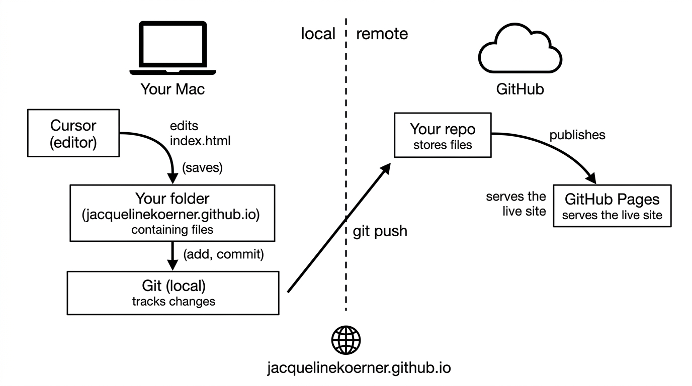

For big picture thinkers, step-by-step instructions are frustrating without the zoomed-out view first. You follow the steps, but you don't know where you are. You're executing commands without a map.
I wanted to commit my portfolio updates to GitHub. As I progressed and asked, I was told: install Command Line Tools. Run git init. Add a remote. Stage files. Commit. Push. Each step worked (eventually), but a new user would have no idea how they connected. Terminal vs. Cursor vs. GitHub — what was the point of each? I kept asking "where am I?" and "what does this button do?" The green progress bar, the inactive Commit button, the "open the gitlog" prompt. I was clicking and typing in the dark.
I asked for the big picture. That's when I got the map. But I had to ask. When you go to a museum, the maps are in the foyer or handed to you by a staff person. When you go to an musical performance, you get a list of songs and scheduled breaks. Why do our AI assistants assume familiarity, and even then, fail to proactively offer us guides?

The system: edit locally → commit → push → live.
If you're a big picture thinker too: ask for the map first. The steps make sense once you know where you're going.